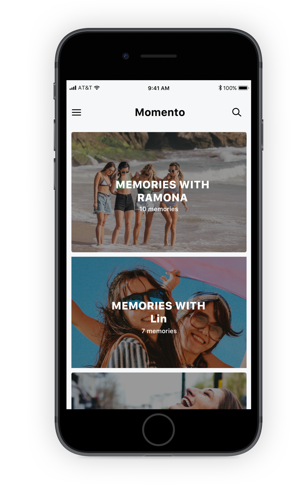
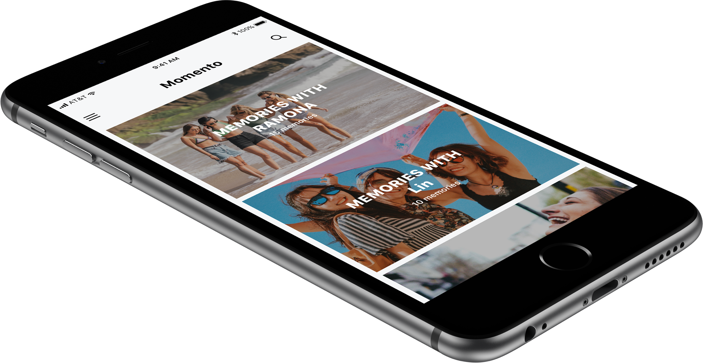
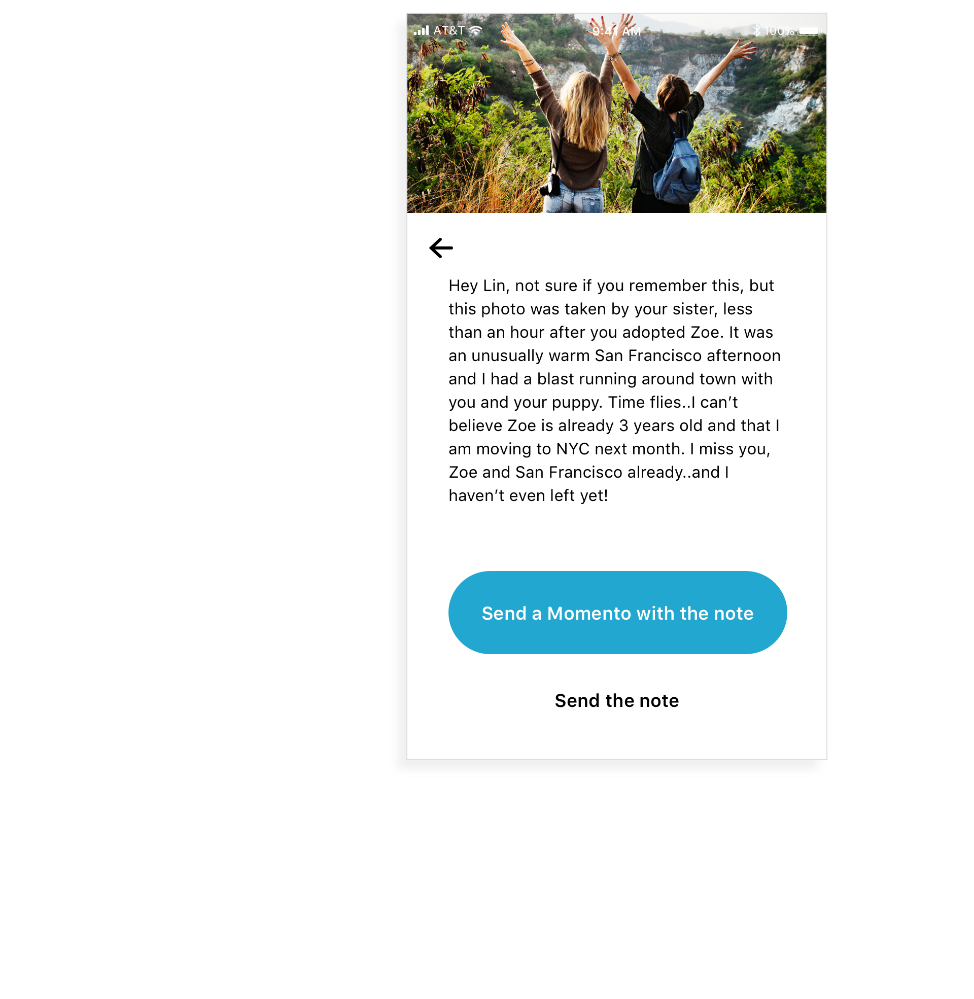
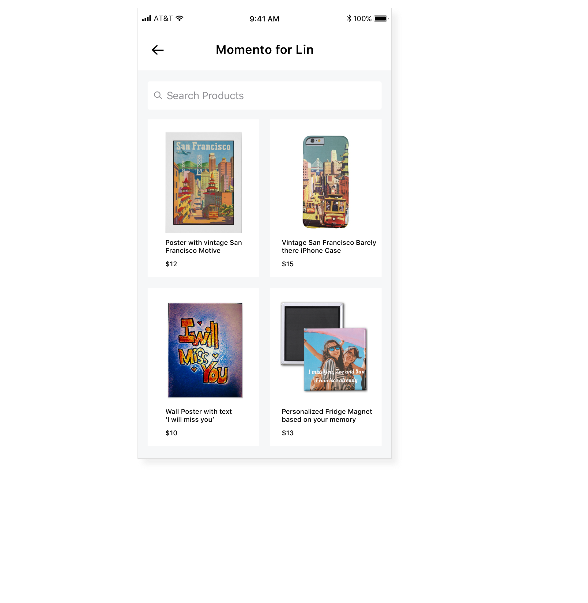

Designing for relationships, memories and nostalgia.


About Zazzle
Zazzle is an online marketplace for custom products that allows designers and customers to co-create and personalize their products (t-shirts, coffee mugs, stamps, posters etc).
What is Momento
Momento is a conceptual service by Zazzle that taps into the power of relationships. Momento allows people to appreciate their relationships through active reminiscing and personalized gift-giving.
"
I don’t feel there is much thought in the gifts I give nowadays… So I’d definitely prefer this process more since putting thought into it is more natural and personalized.
- User Tester
"
"
I don’t feel there is much thought in the gifts I give nowadays… So I’d definitely prefer this process more since putting thought into it is more natural and personalized.
- User Tester
"
"
I don’t feel there is much thought in the gifts I give nowadays… So I’d definitely prefer this process more since putting thought into it is more natural and personalized.
- User Tester
"
Deeper engagement with memories
A dedicated service to look back at your memories with a loved one puts user in a different context. In a more relationship focused environment than any service
currently available to them.
Active reminiscing of shared moments
People engage with the memory and remember a lot of details when prompted to reminisce about the photo. The prompt helps the nostalgia set in, which helps in coming up with meaningful and relatable gift ideas.


Reduced anxiety in the personalization process
By giving context to gifts through moments, people now find the personalization process a lot easier putting more effort into the thought rather than the gift.